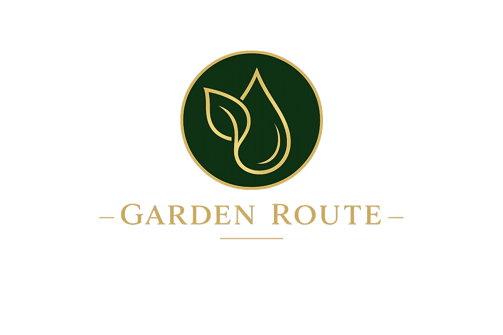
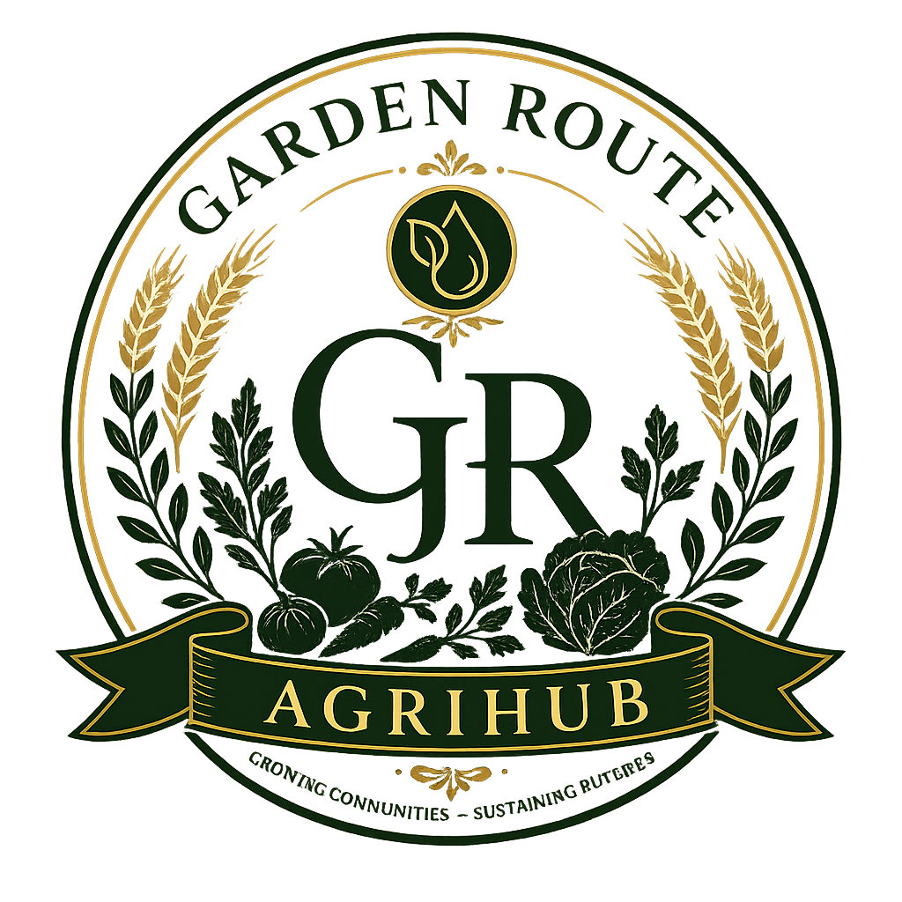

Food security
Localised vegetable, herb and seedling production aimed at reliable fresh-food supply.

Garden RouteIntegrated AgriHub Investor Portal
LAND · WATER · PRODUCTION
The Garden Route Integrated AgriHub connects climate-smart agriculture, water security, renewable energy, logistics and community distribution in one scalable operating model.
Food production depends on water. Water systems depend on energy. Energy affects operating costs. Distribution determines market access. The AgriHub is designed around these connections rather than treating them as separate problems.
Localised vegetable, herb and seedling production aimed at reliable fresh-food supply.
Storage, purification, rainwater harvesting and future borehole infrastructure subject to approvals.
Solar-powered pumping, irrigation and critical operations reduce exposure to grid instability.
Jobs, youth training, distribution and future technical services create local economic pathways.
The operating concept prioritises productive land, protected agriculture, water independence and renewable energy while leaving room for regional replication.

Production footprint and expansion capacity.

Climate-controlled growing environments.

Propagation for the AgriHub and partner growers.
Illustrative five-year targets based on the current project financial model.
A connected system where every operating layer supports the next. Click a domain to inspect its technical scope, SOP pathway, KPIs and documentation.
The current model structures R12.5M of cumulative capital deployment across three milestone-led phases.
Land preparation, 1,000m² tunnels, Phase 1 water purification, 5kW solar, logistics and working capital.
R4.85MGreenhouse expansion, 25,000 L/day water capacity, 25kW solar, packhouse and dedicated logistics.
R4.50MHydroponics, post-harvest systems, 75kW solar, bulk water logistics and commercial nursery expansion.
R3.15MA milestone-led five-year development path.
Infrastructure · Solar · Water · Greenhouses · Proof of concept
Production ramp-up · household subscriptions · institutional sales
Greenhouse expansion · water infrastructure · solar expansion · packhouse
Institutional contracts · cold chain · bulk water · regional markets
Additional AgriHubs · agricultural partnerships · youth development · regional expansion
Every document below links to its source file in the project's GitHub repository, which serves as the transparent documentation layer behind this website.
The Garden Route Integrated AgriHub website is the public presentation layer. Supporting project documentation is maintained in the associated GitHub repository, kept in sync with every figure shown here.
View Source Documentation →For investors, DFIs, strategic partners and community stakeholders, the AgriHub provides a platform for collaboration across food, water, energy and skills development.